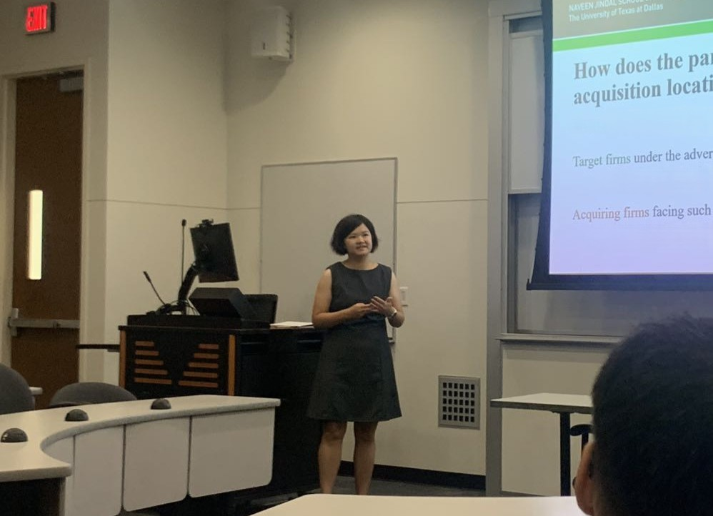

Teaching
Instructor
Naveen Jindal School of Management, The University of Texas at Dallas

Teaching Assistant
Naveen Jindal School of Management, The University of Texas at Dallas
School of Business, University of International Business and Economics